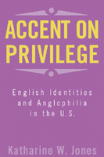

What happens when immigration, privilege, and Anglophilia collide?
What happens when immigration, privilege, and Anglophilia collide?


 What happens when immigration, privilege, and Anglophilia collide?
What happens when immigration, privilege, and Anglophilia collide?

|  |
Accent on PrivilegeEnglish Identities and Anglophilia in the U.S.Katharine W. Jonespaper EAN: 978-1-56639-901-2 (ISBN: 1-56639-901-7) |
"It is to be hoped that very few Americans will read this book. In a most un-English way, it gives away all the trade secrets of the tribe that cares not to speak its name."
—Christopher Hitchens, author of Blood, Class and Nostalgia: Anglo-American Ironies
Accent on Privilege looks at the complexities of immigration, asking how native and immigrant construct race, gender, class and national identity. Katharine Jones investigates how white English immigrants live in the United States and how they use their status as privileged foreigners to gain the upper hand with Americans. Their privilege, she finds, is created by both American Anglophilia and the ways they perform their identities as "proper" English women and men in their host country. Jones looks at the cultural aspects of this performance: how English people play up their accents, "stiff upper lip," sense of humor and fashion—even the way they drink beer.
The political and cultural ties between England and the US act as a backdrop for the identity negotiations of these English people, many of whom do not even consider themselves to be immigrants. This unique exploration of the workings of white privilege offers an important new understanding of the paradoxes of how class, gender, and race are formed in the US and, by implication, in the UK.
Excerpt available at www.temple.edu/tempress
"Immigration from England to the United States, so often 'invisible' to historians and to contemporary observers, is here shown to be a fascinating lens through which the transatlantic workings of identity and privilege may be acutely observed. Capturing the speech, longings, confusions, dress and politics of three dozen contemporary migrants,
Accent on Privilege brilliantly shows how race in the United States is apprehended and negotiated by immigrants whose 'difference' constitutes an advantage."
—David Roediger, Babcock Professor of History at the University of Illinois and the author of Colored White: Transcending the Racial Past
"Herself an English immigrant, Jones (sociology, Philadelphia Univ.) analyzes the experiences of 34 other white upper- or middle-class English immigrants to the United States. She reveals the variety of methods these immigrants used to enhance or minimize their English identities in daily interactions with Americans (e.g., manipulation of their accents, their fashions, even how they drink beer). She also explores how America's love affair with all things English creates both advantages and restrictions for the immigrants and how they manipulate this Anglophilia to their advantage."
—Library Journal
Read "Insiders, Outside: The Scots Irish and the English in America" a review from Journal of American Ethnic History, written by Lester P. Lee, Jr. (pdf).
Acknowledgments
1. "I Want to Be Able to Be English When I Want to Be": Identities as Sites of Contestation
2. Avoiding Extremes: Negotiating Nationalism and Nostalgia
3. Responding to Privilege: Class, Race, Nation, and Anglophilia
4. "Gee, I Love Your Accent": English People and Americans Interact
5. White Mischief? Doing Conceptual Work with Empire, Race, and Gender
6. "The English Are . . . Not Racist, but . . . Just English": Imagining a White Nation
7. To Be English or Not? Constructing Identities in the U.S.
Appendix: Descriptions of Interviewees
Notes
References
Index
Katharine W. Jones is Assistant Professor of Sociology at Philadelphia University.
Sociology
Race and Ethnicity
American Studies
© 2015 Temple University. All Rights Reserved. This page: http://www.temple.edu/tempress/titles/1531_reg.html.